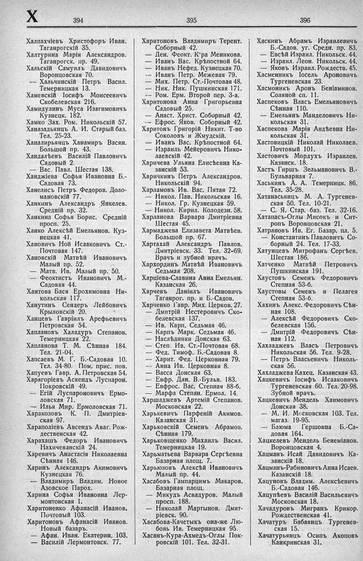

Лист источника 482
Скан

Распознанный текст
X
394
Халпахчіевъ Христофоръ Иван.
Таганрогскій 35.
Халтурина Марія Александров.
Таганрогск. пр. 49.
Хальскій Самуилъ Давидовичъ
Воронцовская 70.
-- Хальчинскій Петръ Васил.
Темерницкая 13.
Хамевскій Іосифъ Моисеевичъ
Скобелевская 216.
Хамидулинъ Муса Изагимовичъ
Кузнецк. 182.
Хамко Зах. Ром. Никольскій 57.
Ханазадьянцъ А. И. Старый баз.
Тел. 25-23.
Ханалирьянцъ Ханамиръ Васян.
Большой пр. 43.
Хандалѣевъ Василій Павловичъ
Садовый 2.
— Вас. Павл. Шестая 138.
Ханджіева Софья Ивановна Б.-
Садовая 73.
Ханелисъ Петръ Федоров. Доло-
мановскій 77.
Ханкинъ Александръ Янкелев.
Средній пр. 32.
Ханкина Софья Борис. Средній
просп. 25.
Ханко Алексѣй Емельянов. Куз-
нецкая 41.
Хановичъ Ной Исааковичъ Ст.-
Почтовая 147.
Хановскій Матвѣй Ивановичъ
Малый пр. 52.
— Матв. Ив. Малый пр. 50.
— Феоктистъ Ивановичъ М.-
Садовая 44.
Хантова Бася Ерохимовна Ни-
кольская 117.
Ханутинъ Сендеръ Лейбовичъ
Крыловскій 20.
Ханцевъ Гавріилъ Арефьевичъ
Петровская 54.
Хаплановъ Халадуръ Степанов.
Темерницкая 22.
Хапланова Т. М. Сѣнная 184.
Тел. 21-04.
Хапсаевъ М. Г. Б.-Садовая 10.
Тел. 34-80. Пом. прис. пов.
Хапуевъ Гавр. А. Петровская 54.
Харагоріевъ Аскендъ Луспарон.
Покровскій 49.
— Егій Луспароновичъ Ермо-
ловская 71.
— Илья Мир. Ермоловская 71.
Харакозовъ К. П. Дмитріев-
ская 97.
Хараполіевъ Авсендъ Аваг. Рож-
дественская 42.
Харахашъ Федоръ Ивановичъ
Нахичеванскій 24.
Харевичъ Анастасія Николаевна
Сѣнная 146.
Харинъ Александръ Акимовичъ
Кузнецкая 76.
— Владимиръ Владим. Новое
Азовское Парох.
Харина Софья Ивановна Лер-
монтовская 1.
Харитоненко Афанасій Иванов.
Почтовый 103.
Харитоновъ Афанасій Иванов.
Новый базаръ.
— Афан. Иван. Екатерин. 103.
— Василій Лермонтовск. 77.
395
Харитоновъ Владимиръ Терент.
Соборный 42.
— Ден. Феокт. К-ра Меникова.
— Иванъ Вас. Крѣпостной 64.
— Иванъ Нефед. Кузнецкая 70.
-- Иванъ Петр. Межевая 79.
— Мих. Петр. Ст.-Почтовая 48.
— Ник. Ник. Пушкинская 171.
-- Ром. Ерм. Второй пер. 3-а.
Харитонова Анна Григорьевна
Садовый 25.
— Анаст. Христ. Соборный 42.
— Ефрос. Яков. Соборный 42.
Харитонъ Григорій Никит. Т-во
Соколовъ и Жмудскій.
— Иванъ Вас. Крѣпостной 64.
— Израиль Мейеровичъ Нико-
лаевскій 42.
Харичева Ульяна Елисѣевна Ка-
занскій 53.
Харичкинъ Петръ Александров.
Никольскій 94.
Харламовъ Ив. Вас. Пятая 72.
— Никол. Пав. Никольская 16.
— Никол. Гр. Кузнецкая 59.
— Никол. Кирил. Колодезн. 58.
Харланова Варвара Дмитріевна
Шестая 45.
Хармаджева Елизавета Матвѣев.
Большой пр. 67.
Хартахай Александръ Павлов.
Дмитріевск. 33. Тел. 32-69.
Врачъ и зубной врачъ.
Хархординъ Матвѣй Ивановичъ
Седьмая 208.
Харціева-Славина Анна Емельян.
Казанская 26.
Харчевъ Даніилъ Ивановичъ
Таганрог. пр. и Б.-Садов.
Харченко Гавр. Мих. Церков. 27.
— Дмитрій Нестеровичъ Ско-
белевская 137.
— Ив. Карп, Седьмая 46.
— Карпъ Марк. Седьмая 46.
— Наслѣдники Донская 63.
— Степ. Ив. Ст.-Почтовая 68.
— Фед. Тимоф. Б.-Садовая 8.
— Харит. Фед. Церковная 79.
— Анна Ив. Церковная 8.
— Васса Донская 63.
— Евфр. Дан. В.-Бульв. 183.
— Евфрос. Вас. Степная 88-б.
— Марфа Степан. Ермол. 14.
Харшаджевъ Артемій Степанов.
Московская 22.
Харькевичъ Парфеній Акимов.
Казанская 31.
Харьковскій Семенъ Абрамов.
Сѣнная 179.
Харьковщенко Михаилъ Васил.
Темерницкая 19.
Харьматьева Варвара Сергѣевна
Базарная площ. 7.
Харьюзовъ Алексѣй Ивановичъ
Малый пр. 44.
Хасабовъ Гампарцимъ Макаров.
Базарная площ.
— Микудъ Асвадуров. Малый
просп. 188.
— Николай Мартынов. Дмит-
ріевск. 90.
Хасабова-Качетыкъ она-же Лю-
бовь Ив. Темерницкая 95.
Хасанъ-Кура-Ахмедъ-Оглы Пок-
ровскій 101. Тел. 32-31.
396
Хаскинъ Абрамъ Израилевичъ
Б.-Садов. уг. Средн. пр. 83.
— Евсѣй Израил. Никольск. 44.
— Израил. Леон. Никольск. 44.
— Яковъ Израил. Рождеств. 45.
Хасменникъ Іосель Ароновичъ
Тургеневская 23.
Хасмоникъ Аронъ Беніаминов.
Соляной сп. 11.
Хаспековъ Власъ Емельяновичъ
Сѣнная 110.
— Емельянъ Манделовичъ Ни-
кольская 31.
Хаспекова Марія Авдѣевна Ни-
кольская 31.
Хастовицкій Николай Николаев.
Почтовый 101.
Хастовичъ Мордухъ Израилев.
Казанск. 18.
Хастъ Гиршъ Зельмановичъ В.-
Бульварная 7.
Хаськинъ А. А. Темерницк. 86.
Тел. 35-28.
Хатанасьянцъ М. А. Тургенев-
ская 50. Тел. 10-21.
— С. Я. Стар. баз. Тел. 32-16.
Хатапасъ-Оглы Мисокъ и Сит-
ропъ Воронцовская 21.
Хатрановъ Ив. Ег. Базар. пл. 5.
— Константинъ Павловичъ Со-
борный 24. Тел. 17-33.
Хатунцевъ Митрофанъ Сергѣев.
Шестая 186.
Хатченко Матвѣй Петровичъ
Пушкинская 191.
Хаустовъ Семенъ Федоровичъ
Степная 53-б.
Хаустовы Семенъ и Пелагея
Степная 53-б.
Хахинъ Алекс. Федоровичъ Сѣн-
ная 108.
— Алексѣй Федоровичъ Ско-
белевская 156.
— Дмитрій Федоровичъ Сѣн-
ная 112.
Хахладжевъ Власъ Петровичъ
Никольская 56. Тел. 9-28.
— Петръ Власьевичъ Николь-
ская 56.
Хахладжева Кахец. Казанская 43.
Хацкевичъ Іосифъ Исааковичъ
Тургеневская 60. Тел. 20-98.
Зубной врачъ.
Хацкевичъ Мендель Хаимовичъ
Донская 38.
— М. И. Московская 103. Тел.
магаз. 19-95.
— Блюма Гершовна Б.-Са-
довая 164.
Хацкелевъ Мендель Бенеміанов.
Воронцовская 4.
Хацманъ Исай Давидовичъ Ка-
занскій 18.
Хацманъ-Рабиновичъ Анна Исаев.
Казанскій 18.
Хацуновъ Владим. Алексѣевичъ
Б.-Садовая 146.
Хацупѣевъ Василій Васильевичъ
Московская 18.
Хачадуровъ Мигранъ Крикор.
Рождественская 41.
Хачатуръ Бабаянцъ Тургенев-
ская 15.
Хачатурьянцъ Осипъ Акоповъ
Канкринская 31.